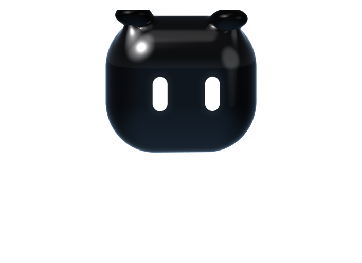

Approve commands in one click
See exactly what Claude wants to run or change, then allow or deny it. Nothing runs until you say so.
Go on, press one.

See what’s running, what’s finished and what needs you. Approve commands and answer Claude without opening the terminal.
Free and open source · macOS 14 or later · Claude Code, Codex and Gemini CLI
Pick a finish and a colour you’ll love seeing all day.
↑↓ finish ←→ colour
See exactly what Claude wants to run or change, then allow or deny it. Nothing runs until you say so.
Go on, press one.
Claude Code and Codex, plus Gemini CLI in beta. In whatever terminal or editor you run them.
Pick an answer when Claude asks. Send your next message when it’s done, and it keeps going.
What each agent is doing, which one needs you, and how far along it is. Click one to jump straight to its terminal.
One look at the notch tells you if your agent is working, waiting on you or done.
Resets in 4h 58m
See how much usage you have left, and get a heads-up before you run out.
Stop checking the terminal. Your notch tells you when Claude needs you.
Free and open source · macOS 14 or later ·